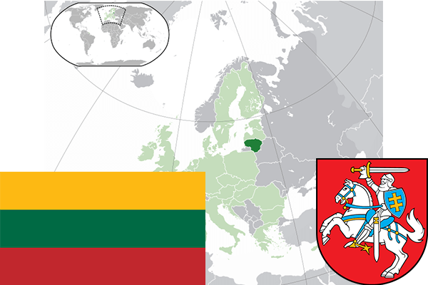

To`liq nomi: Litva Respublikasi
Region: Shimoliy Yevropa
Qonunchilik shakli: Respublika
Mustaqillik kuni: 6-sentabr 1991-yil (Sobiq Ittifoqdan)
Poytaxt: Vilnyus
Maydoni: 65 301 km² (dunyoda 121 -o`rinda )
Chegaradosh davlatlari: Latviya, Belorus, Polsha, Rossiya
Aholisi: 2,821,674 (dunyoda 137 - o`rinda, 2017 -yil roʻyxat)
Aholi zichligi: 43/km²
Aholining o`rtacha yoshi: 74,6 yil (79,7 ayollar, 69,5 erkaklar)
Rasmiy tili: Litva tili
Dini: Ko`pchiligi katolik qisman protestant va pravoslav
Pul birligi: Yevro
Telefon prefiksi: +370
Internet domen: .lt
Xalqaro tashkilotlarga a`zoligi: BMT (1991 – yildan), Yevropa Ittifoqi (2004-yildan), Shimoliy Atlantika shartnomasi (2004-yildan)
Dengiz va okeanlarga chiqishi: Boltiq dengizi
YIM: Butun: $ 90.632 mlrd, Jon boshiga $ 31,935 (2017 - yil roʻyxati)
Yirik shaharlari: Vilnyus, Kaunas, Klaypeda